Um dos grandes benefícios de rastrear o histórico de um projeto com Git é a capacidade de desfazer alterações em diferentes estágios do fluxo de trabalho.
Existem três cenários principais de desfazer no Git:
Os exercícios a seguir utilizam o arquivo pilots.html.
Mudança não desejada — exercício
Para demonstrar cada um dos cenários acima, vamos simular alterações no arquivo.
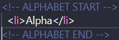
Salve a alteração e visualize no navegador para confirmar o efeito.
1 — Desfazendo mudanças antes de adicioná-las ao staged
Para recuperar as palavras perdidas, podemos restaurar o arquivo diretamente do último commit.
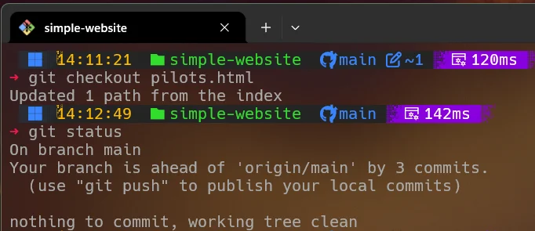
Abra o arquivo pilots.html novamente para confirmar que foi restaurado.
2 — Desfazendo mudanças depois de adicioná-las ao staged
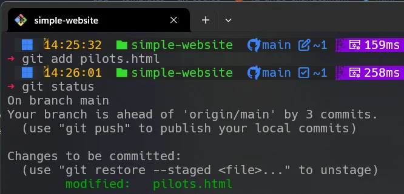
Ao executar git status, vemos que o arquivo está staged.
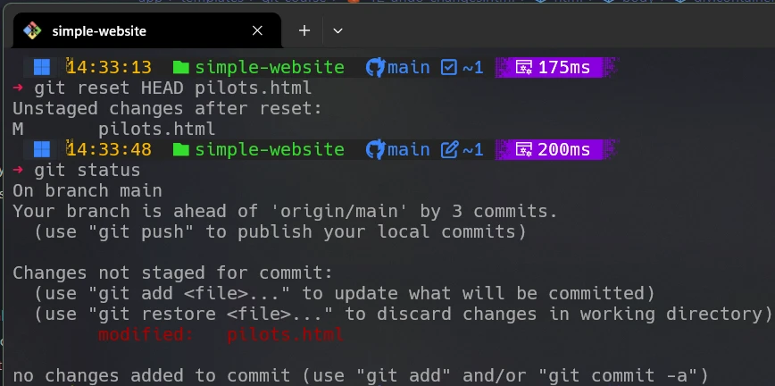
O comando git reset removeu o arquivo do index, retornando-o ao diretório de trabalho.
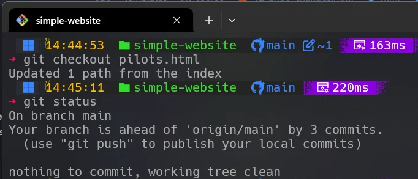
3 — Desfazendo mudanças comitadas
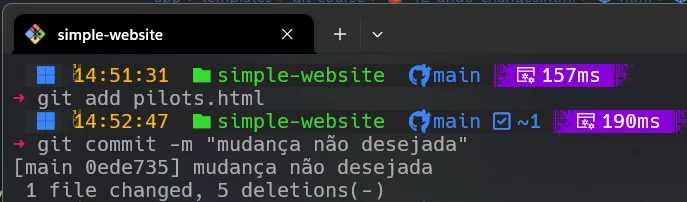
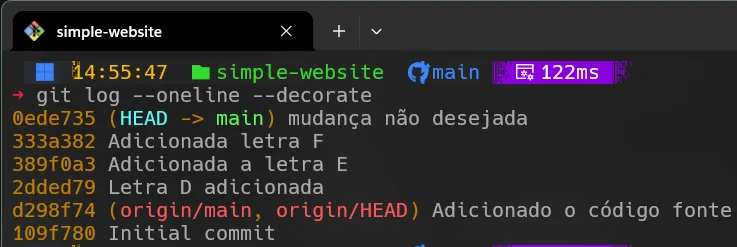
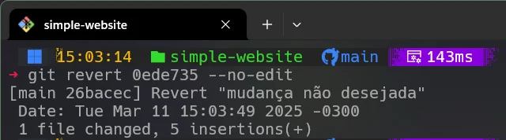
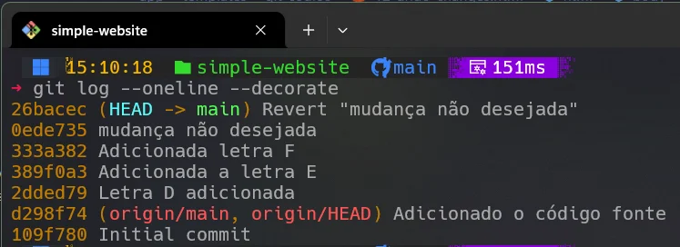
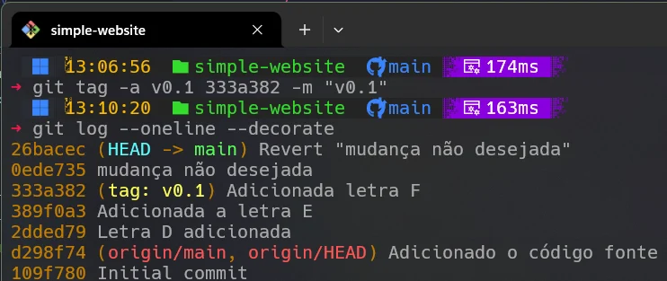
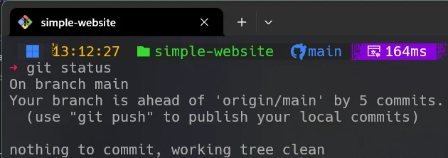
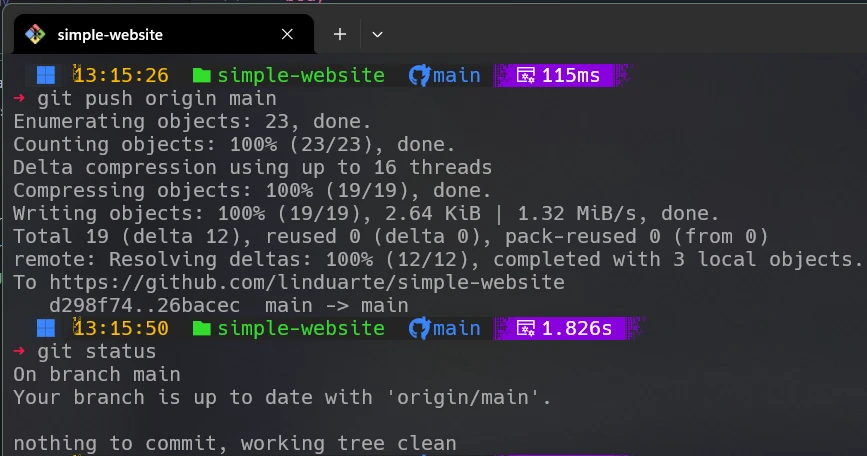
O Git é um poderoso sistema de controle de versão que permite navegar entre estados do projeto com segurança.
Você pode estar se perguntando como o Git organiza internamente essas áreas.
O diretório Git (.git) armazena todo o histórico e metadados do projeto.
O diretório de trabalho contém os arquivos reais que você edita.
A área de staging (index) guarda as alterações que serão incluídas no próximo commit.
git reset
O git reset é usado para retroceder alterações em diferentes níveis.
Digamos que você tenha feito um commit e deseje desfazê-lo sem perder o conteúdo.
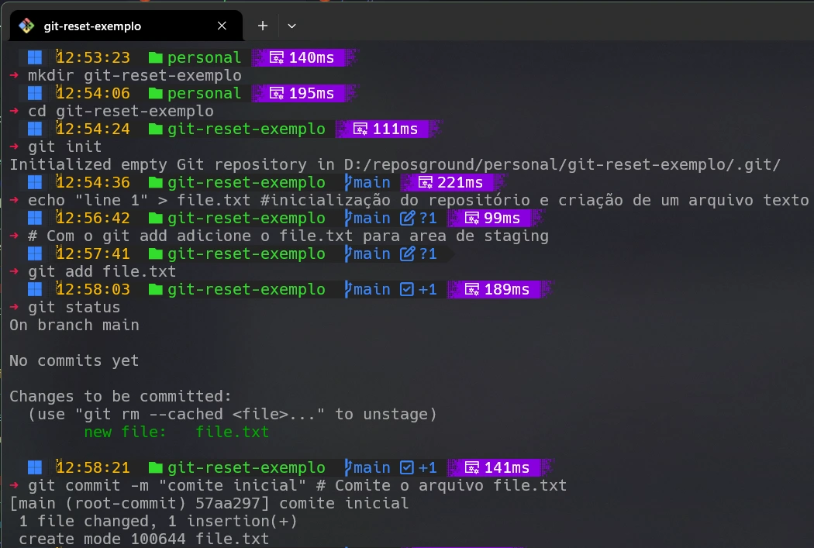
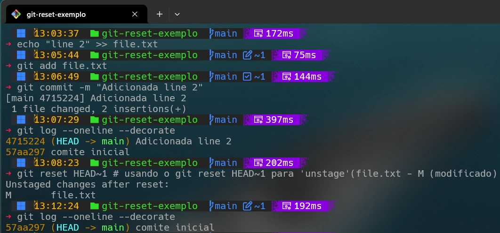
Neste exemplo, o reset ajusta o ponteiro HEAD e redefine o estado do projeto.
O git revert cria um novo commit que desfaz alterações anteriores sem modificar o histórico.
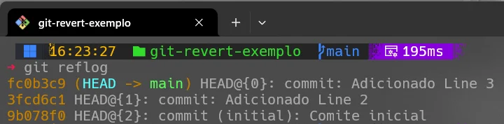
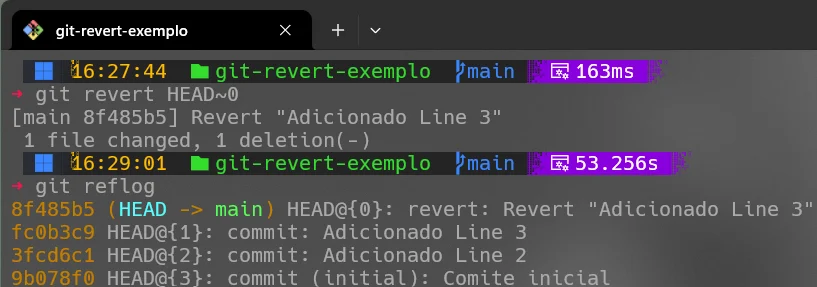
--hard.push --force